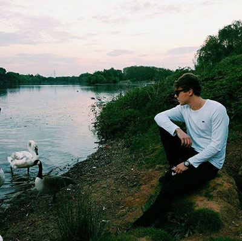

Biography
About the team
This is an assignment for web development module. Together with my team members – Alexander Ramsey and Joao Vasconcelos we’ll be showing our understanding of webpage development, using models of good practice and comparing different developer job.

Matt
My name is Mateusz Szatrowski, I live and study in England for over 12 years. As a person without specified hobby I used to spend most of my free time drawing, at the same time being a computer gamer, that’s where my journey started. At the time of my secondary education, which has helped me acquire basic skills with programming and develop a good approach to computers, I was ambitious and enthusiastic person and had enormous satisfaction after building or creating things. During the course of my studies, IT piqued my attention and inspired me in my career decision. It introduced me to computer systems and has helped me explore the key concepts of Systems engineering making me curious and demanding to learn more.
Alex
My name is Alex Ramsey; I’m twenty years old and used to live in Bury St Edmunds Suffolk. My main hobby is scuba diving and I learnt and qualified as British Sub Aqua Club (BSAC) Ocean Diver in 2011. Diving has further developed my ability to work in a team and independently. I have always been really interested in Information and communication technology (ICT) and have acquired a considerable amount of knowledge and experience from my college studies and outside interests. This has been further clearly demonstrated by successful completion of both my BTEC and first year HND courses at Cirencester College, showing my real passion for the subject.
Joao
I’m an 18 years old Portuguese student in the UK, University of Northampton. On my free what I mostly enjoy doing is playing games or listening to music, if you don’t count computing, these two areas are something that I’m truly passionate about. Now, going back computing, this is something that I feel in love, because I always thought about the possibilities and how far mankind can push technologies forwards, to help each other or to continuously change the world when possible. This is what inspires me to be on this course.